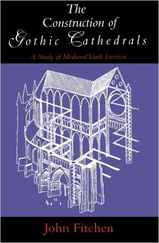

Master Thesis Reading – The Construction of Gothic Cathedrals

Master Thesis Reading List – 1 The Construction of Gothic Cathedrals – A Study of Medieval Vault Erection The Construction of Gothic Cathedrals Google Book Link John Fitchen systematically treats the process of erecting the great edifices of the Gothic era. He explains the building equipment and falsework needed, the actual operations undertaken, and the sequence of these operations as specifically as they can be deduced today. Since there are no contemporary accounts of the techniques used by medieval builders, Fitchen’s study brilliantly pieces together clues from manuscript illuminations, from pictorial representations, and from the fabrics of the building themselves. “Anyone who has caught the fascination of Gothic Churches (and once caught, has almost necessarily got it in the blood) will find this book enthralling. . . . Clearly written and beautifully illustrated.” —A. D. R. Caroe, Annual Review, Central Council for the Care of Churches “Fitchen’s study is a tribute to the extraordinary creative and engineering skills of successive generations of mediaeval builders. . . . This study enables us to appreciate more fully the technical expertise and improvements which enabled the creative spirit of the day to find such splendid embodiment.” —James Lingwood, Oxford Art Journal “Fitchen, in what can only be defined as an architectural detective story, fully explores the problems confronting the medieval vault erectors and uncovers their solution. . . . This is a book that no serious student of architecture will want to miss.” —Progressive Architecture